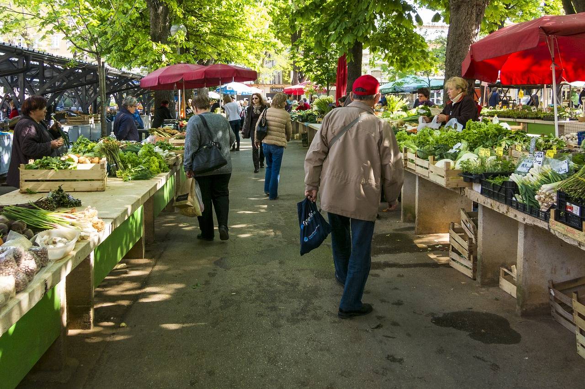

Buying from your local farmer allows you to support local agriculture. This means that the food you are eating comes from nearby, and does not require us to waste lots of energy and petroleum to ship the food halfway around the world.

You can find a variety of fresh produce at more affordable prices than in a supermarket while supporting Your Local Economy & Farmers. You are supporting human beings and the local economy, not massive agribusiness GMO food conglomerates.
By shopping locally, you will eat seasonally, fresh and ripe. This is a great way to increase your overall health. Supermarkets offer too much variety, and the food is picked before it has ripened decreasing the vitality.
Food from your local farmers market is generally safer. Remember the recent outbreaks of E. coli in bagged spinach? These things happen mostly in large industrial settings, where businesses work to mass produce food, preserve it and bag it in quantity.
There is no doubt that locally-grown foods just simply taste better. You will never be able to eat a carrot from the grocery store again! Eating fresh, locally-grown fruits and veggies are great for your health.
Farmers markets are just plain fun for the whole family. Meeting your local community is an excellent way to feel connected to the world around you, increasing health for body, mind, and spirit.